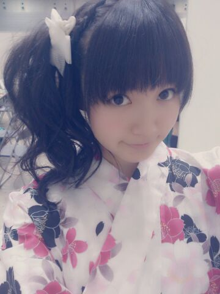

| 2013/07 29 Mon | ひめたん(*>ω<*)そ の319 |

どーん！
夏ですよみなさーん
浴衣着たよ(*^ω^*)
ゆーことで横浜個握
ありがとうございました！
白浴衣はいかがだったでしょうかみなさん
去年は黒甚平だったんだよーどうかな
白浴衣はちょっとお姉さんになった気分＊

２パターンで悩んで
会場に持って来てたつもりだったのに
黒×ピンク帯を忘れてきたのね(´・ω・｀)笑
んでも、白浴衣に白帯も
これはこれでアリらしいですー
ちょっとお上品な感じがもう浴衣ぱわー。
ちょこちょこしか歩けないし
椅子にも綺麗に座らなきゃだし
浴衣着て生活していたら
きっとおにゃのこ力あがるんだろうね
でもちょーっと大変そうだなー
みなさんとお話してて気づいたのが
関東はもう長いこと握手会がなかったのね！
プリンシパルみて気になって来てみたー
みたいな方とかいらっしゃって
もうねー
プリンシパル頑張ってよかったなーって
思った( ^O^ )見つけてもらえて///
そして浴衣いろんな方にほめてもらえて
着てよかったーって思いましたー
ちなみに
プライベートでも浴衣着てなかったので
昨日が今年初浴衣でしたー
夏祭りとか行きたいけどね
最近どうやら人混みが苦手みたいです
昨日は収録前に
愛未とランチしたんだよー
愛未はいっつも誘ってくれるのに
あ、ちょっとその日は...ってことがよくあるので
ごめんねー昨日楽しかったよー
いつもありがとうまた誘ってね愛未っ

どーん！
夏ですよみなさーん
浴衣着たよ(*^ω^*)
ゆーことで横浜個握
ありがとうございました！
白浴衣はいかがだったでしょうかみなさん
去年は黒甚平だったんだよーどうかな
白浴衣はちょっとお姉さんになった気分＊
２パターンで悩んで
会場に持って来てたつもりだったのに
黒×ピンク帯を忘れてきたのね(´・ω・｀)笑
んでも、白浴衣に白帯も
これはこれでアリらしいですー
ちょっとお上品な感じがもう浴衣ぱわー。
ちょこちょこしか歩けないし
椅子にも綺麗に座らなきゃだし
浴衣着て生活していたら
きっとおにゃのこ力あがるんだろうね
でもちょーっと大変そうだなー
みなさんとお話してて気づいたのが
関東はもう長いこと握手会がなかったのね！
プリンシパルみて気になって来てみたー
みたいな方とかいらっしゃって
もうねー
プリンシパル頑張ってよかったなーって
思った( ^O^ )見つけてもらえて///
そして浴衣いろんな方にほめてもらえて
着てよかったーって思いましたー
ちなみに
プライベートでも浴衣着てなかったので
昨日が今年初浴衣でしたー
夏祭りとか行きたいけどね
最近どうやら人混みが苦手みたいです
昨日は収録前に
愛未とランチしたんだよー
愛未はいっつも誘ってくれるのに
あ、ちょっとその日は...ってことがよくあるので
ごめんねー昨日楽しかったよー
いつもありがとうまた誘ってね愛未っ

 瀬戸内マリンビューと言う
瀬戸内マリンビューと言う
観光列車知っていますか？
知らなかったああ(｀・ω・´)
地元民ほどそーゆーの知らんもんよね
東京人は東京タワー行ったことない
みたいな。あるでしょねえ
作詞、作曲は興味ありますか？
できたらかっこいいけどねー
でもむずかしそうねー///
バドミントン派？卓球派？テニス派？
バド！バドミントンすきです(*^ω^*)
最近コメ数増えてきて
全部みてるのかなーとか
もうコメいみないかなーとか思ったり...
どうなんかな？
なーにーをーおっしゃるんですかああ
もうねいつも待ってるんだよ
全部読んでるんだよ
だからコメントくれたら嬉しいよおお
ひめたん推しになってもいい？
いもたまコンビ推しだけど
ひめたんも推していい？
嬉しい！もうねーめちゃうれしい！
ありがとーうがんばるね(〃ω〃)
ひめたんって人見知り？？
色んな子と仲良くできるには
どうしたらいいのかな...？
人見知りはしないタイプよ！
とりあえずにこにこすることって
大事だと思うな♪
あんぱん派？メロンパン派？
どっちもあんますきくないけど
あんぱんのがまだ食べれるかなー
でもね美味しいメロンパンのおみせを
２つ知ってます∩^ω^∩
一度だけタイムマシンを使えるとします
(往復一回分)。どの時代に行きますか？？？
自分のいない未来に行きたい！
自分を可愛くみせる為に
心がけている事は何かな
うふふー何かしら///
自主練習の方法を教えて！
歌なんかはカラオケ行ったり
ダンスはムービー撮ってみたりするよー
小さな幸せを感じる
瞬間はどんな時なんですか？
小さな幸せを感じられるのって
大事なことなんだよねーきっとね
うーんお風呂入ってる時とかかなー
朝日新聞の検定結果は
合格している自信はありますか？
ないよーだって
プレテストぼろぼろだったもん(´・ω・｀)
ひめたん流の体型維持を教えてください！
あたしに聞くことじゃないなーこれー笑
うーんそうだな
運動するようにはしてるかなー
握手会で一緒に歌歌おう!?
うん！楽しみにしてるね( ^ω^ )
福岡・札幌の人々にアピールしたい
「ひめたん」及び「乃木坂４６」の
アピールポイントは何かな？
ひめたんもみんなも
福岡・札幌だいすきなので今から楽しみよー
どちらもライブさせていただくのは
なんといっても今回が初めてなのでね。
ぜひパフォーマンスみていただきたいなー
野球はまったく興味なし？
そんなことないよ！
野球するひと応援してるよー！
今までに自分と同じ"ひめかさん"と
出会ったことはありますか？
駐車場で、大声で泣いてる女の子に
ひめちゃーんごめんねーってあやしてる所は
みたことありますよー
ひめたんもちっちゃい時は
短気ですぐ泣いてたから
名前が一緒だと性格も似るのかねーなんて
ままに言われた気がすーるよー
自分に欠けていると思っている事は何？
いっぱいありますよそりゃー！
あーそうそう世界史のテストは
もーう前回より上がりましたよー＼( ^O^ )／

(＊´・ω・＊)
コメント(283)
2013/07/29 09:36